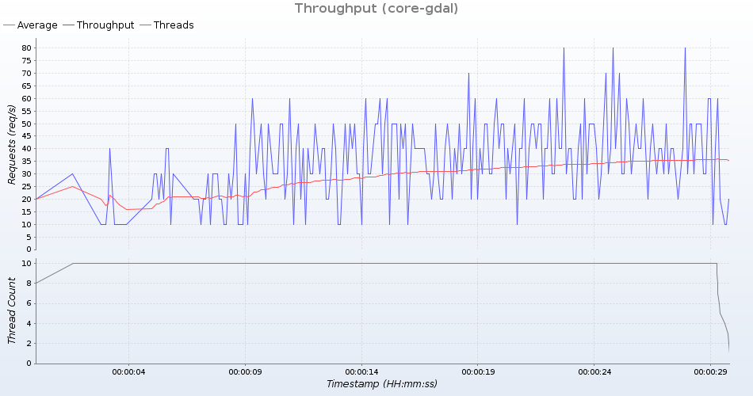
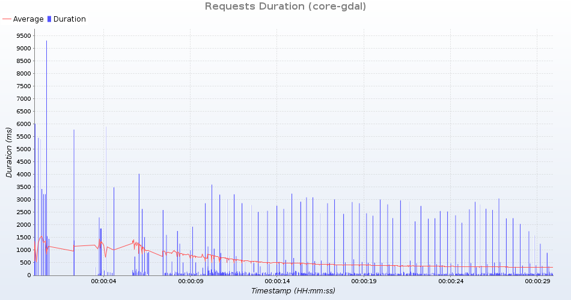
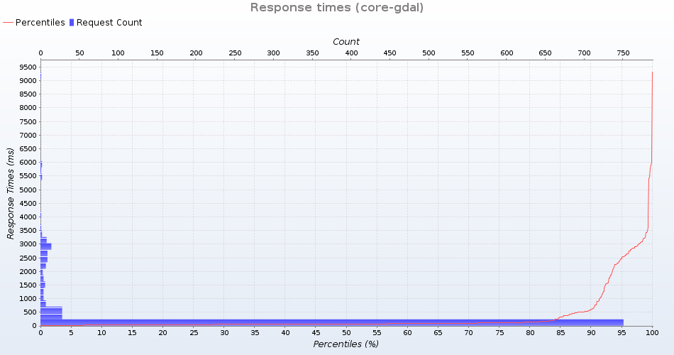
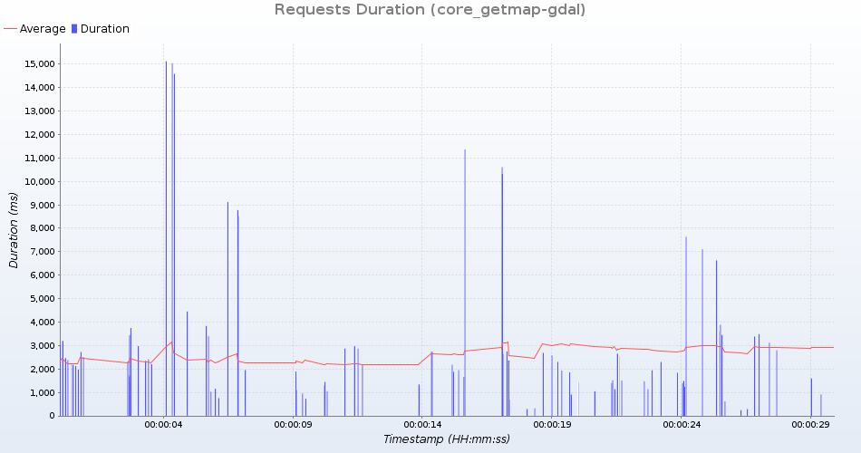
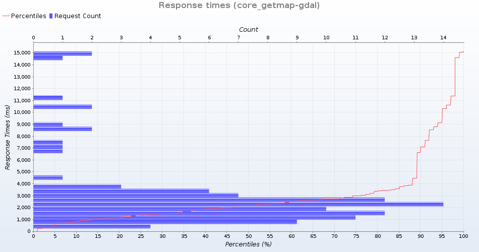
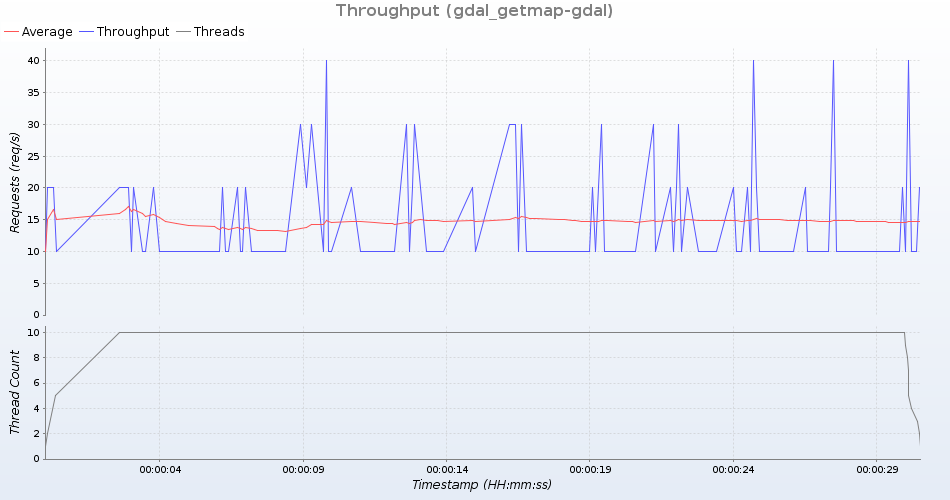
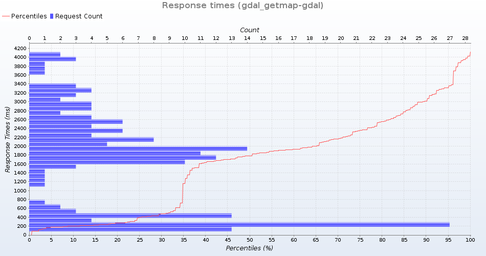

Group: core-gdal
Summary
| General | |
|---|---|
| Time | 20190314T202136+0000 - 20190314T202205+0000 |
| Duration in seconds | 30 |
| Number of requests | 892 |
| Requests per second | 29 |
| Response duration (ms) | |
| Min | 10 |
| Average | 332 |
| Max | 9306 |
| Standard deviation | 840 |
| Response duration quantiles (ms) | |
| 10% | 32 |
| 20% | 45 |
| 30% | 54 |
| 40% | 61 |
| 50% | 70 |
| 60% | 83 |
| 70% | 101 |
| 80% | 142 |
| 90% | 587 |
| 99% | 3424 |
| 99.9% | 6008 |
| 100% (max. value) | 9306 |
| Response size (bytes) | |
| Total | 20929510 |
| Min | 493 |
| Average | 23463 |
| Max | 92180 |
| Standard deviation | 23503 |
| Status codes | |
| 200 | 892 (100%) |



Detailed response information
Group: core_getmap-gdal
Summary
| General | |
|---|---|
| Time | 20190314T202212+0000 - 20190314T202237+0000 |
| Duration in seconds | 30 |
| Number of requests | 101 |
| Requests per second | 3 |
| Response duration (ms) | |
| Min | 241 |
| Average | 3013 |
| Max | 15126 |
| Standard deviation | 3026 |
| Response duration quantiles (ms) | |
| 10% | 873 |
| 20% | 1153 |
| 30% | 1474 |
| 40% | 1877 |
| 50% | 2180 |
| 60% | 2463 |
| 70% | 2733 |
| 80% | 3380 |
| 90% | 6631 |
| 99% | 14590 |
| 99.9% | 15044 |
| 100% (max. value) | 15126 |
| Response size (bytes) | |
| Total | 43920635 |
| Min | 2310 |
| Average | 434857 |
| Max | 1180973 |
| Standard deviation | 357971 |
| Status codes | |
| 200 | 101 (100%) |



Detailed response information
Group: gdal_getmap-gdal
Summary
| General | |
|---|---|
| Time | 20190314T202248+0000 - 20190314T202318+0000 |
| Duration in seconds | 30 |
| Number of requests | 184 |
| Requests per second | 6 |
| Response duration (ms) | |
| Min | 83 |
| Average | 1620 |
| Max | 4116 |
| Standard deviation | 1104 |
| Response duration quantiles (ms) | |
| 10% | 200 |
| 20% | 267 |
| 30% | 478 |
| 40% | 1632 |
| 50% | 1785 |
| 60% | 1925 |
| 70% | 2165 |
| 80% | 2554 |
| 90% | 3011 |
| 99% | 3977 |
| 99.9% | 4032 |
| 100% (max. value) | 4116 |
| Response size (bytes) | |
| Total | 63985346 |
| Min | 2305 |
| Average | 347746 |
| Max | 885967 |
| Standard deviation | 341381 |
| Status codes | |
| 200 | 184 (100%) |


